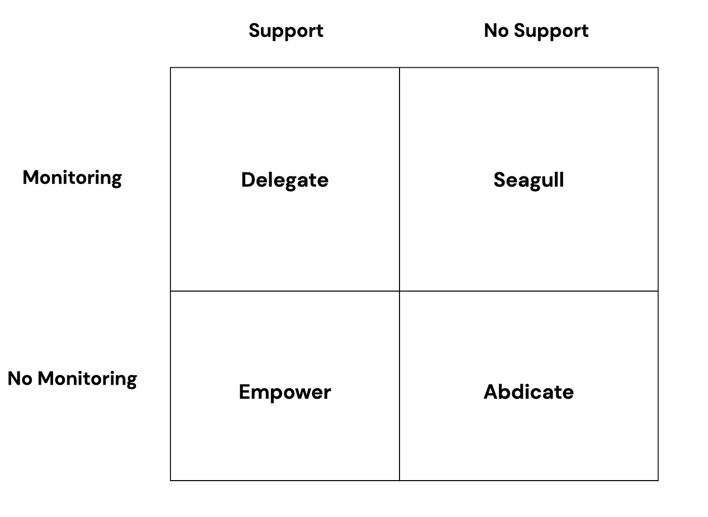
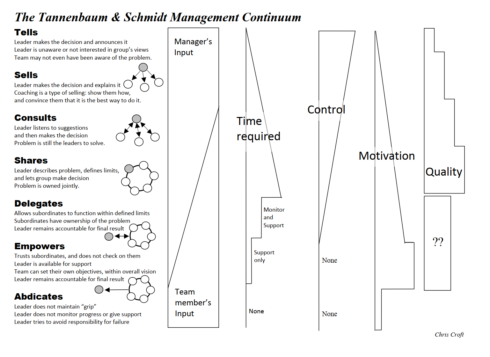
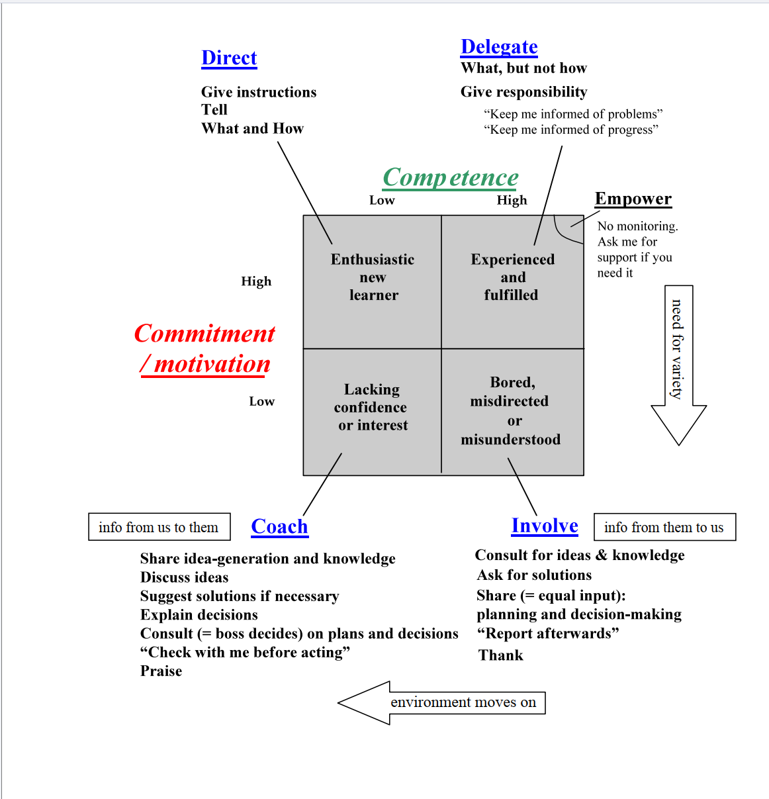
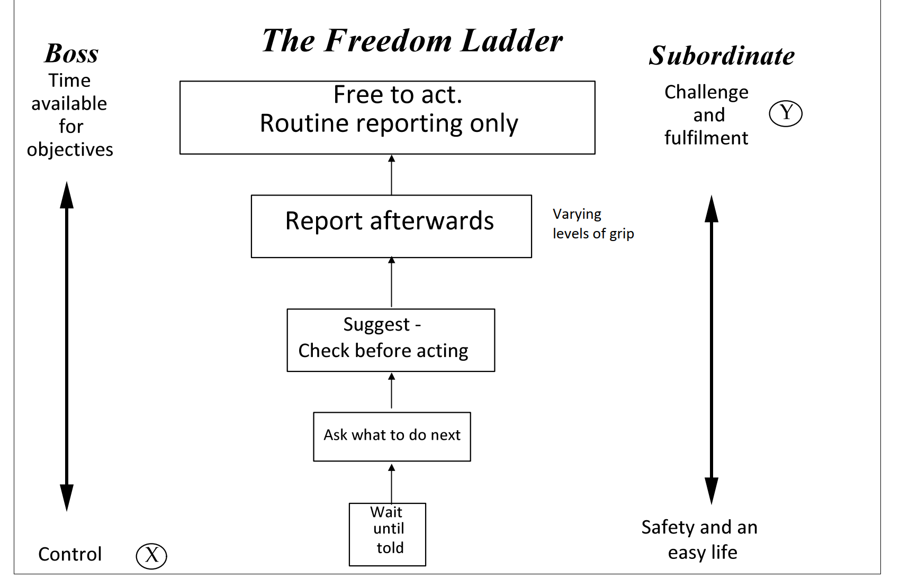
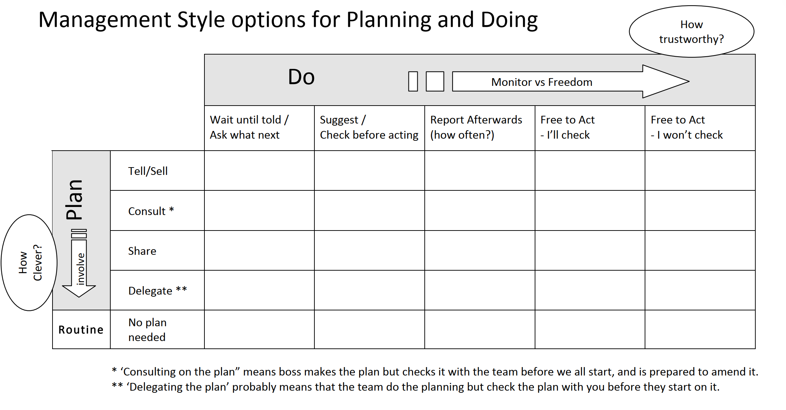

What Is a Leader? — A Practical, Easy-to-Skim Guide
This guide organises the core lessons, stories, and frameworks about leadership vs. management into clear sections you can scan quickly.
At a glance
- Leaders inspire vision and motivation; managers build systems and measure. You need both.
- A leader’s three core responsibilities: People, Systems, Vision.
- Almost everything traces back to management: culture, processes, oversight.
- Monitor by being present (MBWA) and doing “Back to the Floor.”
- Communication is leadership: use five complementary methods.
- John Adair: leadership is about actions, not traits (Task–Team–Individual).
- Motivation: Maslow’s Hierarchy — secure basics, build belonging, recognise achievements, enable self-actualisation.
- Recognition grows performance — praise strengths, coach gaps, and separate praise from improvement.
- Adapt motivation to personality — four types: Analytical, Controller, Enthusiast, Amiable.
- 20 Motivational Essentials: ownership, involvement, challenge, security, recognition, growth, progress, fairness, purpose, role model.
Table of contents
- Leadership vs. Management — The Captain Story
- Is Everything Management's Fault? — Train Accident Story
- Monitoring Systems — MBWA & Back to the Floor
- Communication in Leadership — 5 Key Methods
- John Adair and Leadership Theories
- Final takeaways
- Motivation — Maslow's Hierarchy of Needs
- Recognition & Performance — The Management Potato
- Personality-based Motivation — Four Types
- Is Money a Motivator? — Key Insights
- 20 Motivational Essentials (Practical Playbook)
- Leadership Styles — Tannenbaum & Schmidt Continuum (Extended)
- Empowerment in Practice — Malcolm's Story
- Why Delegate? — Six Key Advantages
- Objections to Delegating — Common Barriers & Why They're False
- Would You Be Missed? — Nick's Motorbike Crash Story
- The Cushion Story — Death by a Thousand Cuts
- How to Delegate — The 8-Step Process
- Don't Take the Monkey — Managing Delegation Requests
- Situational Leadership — Competence vs. Motivation
- Dave's Story — When Situational Leadership Goes Wrong
- The Freedom Ladder — Progressive Autonomy
- Grip in Delegation — How Much Control to Keep
- Planning vs. Doing — Two-Dimensional Leadership Control
- Leadership Schedule — Daily, Weekly, Monthly, Yearly Checklist
- Three Types of Leadership Theory — Traits, Transactional, Transformational
- The Do–Get–Feel Loop — Breaking Negative Cycles
- Maslow × Personality — Motivators by Type
- Ownership — Every Task Needs One Owner
- The Banana of Boredom — Extending Situational Leadership
- Tell → Delegate — The Christmas Tree of Competence
Leadership vs. Management — The Captain Story
The story
You board a cruise ship. The captain personally greets passengers by name, leaves personalized tags on pillows, serves soup at dinner, and even shovels coal in the engine room when the stoker is sick. Admirable energy — but the bridge is empty and the ship drifts toward icebergs until the captain rushes back to steer her clear. Heroic, yes — but risky leadership.
What you really want is a captain on the bridge: delegating, designing systems, and keeping the big picture in view — not doing every job personally.
Key lessons
- Management isn’t doing everyone else’s job; it’s ensuring everything gets done.
- Build a “machine of people” with training, QA, and traceability so quality issues are caught and fixed.
-
A leader’s core responsibilities:
- People: right roles, motivation, accountability.
- Systems: processes, QA, error correction, continuous improvement.
- Vision: direction and when to change people/systems.
- If things go wrong (salty soup, bad bed), it’s ultimately the leader’s responsibility: selection, training, systems, checks.
- A good manager can step away briefly and the organisation still runs — thanks to delegation and robust systems.
Q&A
- Why memorize names and add pillow tags? To show care — but the real test is whether a system (training/QA) ensures it without the captain doing it all.
- Why is serving soup/boiler work a problem? It steals time from planning, systems, and oversight.
- Does saving the ship prove great leadership? Courage, yes — but great leadership prevents constant heroics.
- What is a “machine of people”? A designed org where roles, training, and accountability deliver reliable results.
- What happens if the captain disappears? Systems keep things steady short-term; without vision, problems emerge over time.
Is Everything Management’s Fault? — Train Accident Story
The story
After a fatal UK train crash, blame initially fell on a worker who left early on Friday. But supervisors allowed a culture of leaving early; the depot manager set the tone; the national manager should have detected the depot’s performance issues. Accountability climbs the chain.
Key lessons
- Individuals own their choices, but systems and culture are management’s job.
- Managers are responsible for people, processes, and monitoring.
- CEOs are responsible for everything overall; each manager for their area.
Q&A
- Is the worker entirely to blame? No — the culture allowed it; he didn’t expect catastrophe.
- What about the supervisor? Permitted or failed to notice — partly at fault.
- Why the depot/national manager? They own culture and oversight; they must detect failing depots.
- How to avoid this? Right people, right systems, regular monitoring.
Monitoring Systems — MBWA & Back to the Floor
Overview
Leaders can’t do everything. Delegate, set up systems, then monitor them. Two practical methods:
- Management by Walking Around (MBWA)
- Back to the Floor
MBWA
- Be physically present; spend ~1–2 hours daily walking around and talking with staff.
- During tough times, increase communication, don’t cut it.
- Ratio guideline: 25% speaking, 75% listening.
- Ask what people are doing, check progress, hear problems, share updates.
- Use MBWA to verify the information cascade actually reaches the frontline.
Back to the Floor
- Periodically do the lowest-level job to understand real constraints.
- Don’t go undercover — be open about learning.
- Benefits: credibility, empathy, and better decisions (staffing, equipment, pricing).
- Prevents senior leaders from drifting above reality when middle managers report only “good news.”
Q&A
- What must leaders do after delegating? Monitor systems and people.
- Why MBWA? Direct contact checks health of work and comms.
- Why Back to the Floor? Reconnects leaders with the truth and earns respect.
Communication in Leadership — 5 Key Methods
Overview
Communication is the wiring of leadership. Great leaders combine five channels to keep teams informed, aligned, and motivated.
The five methods
- Management by Walking Around (MBWA) — be present and listen.
- Returning to the ground — keep close to reality, repeatedly.
- Information cascade — managers → supervisors → frontline; design formal routines if needed.
- Team meetings — short weekly meetings; every leader attends two: with their team, and with boss + peers.
- Annual whole-company address — share results and the plan for next year; builds trust and belonging.
Q&A
- Why is this powerful? Scale, trust (profits reinvested), and inspiration.
- What fails under pressure? Communication — don’t cut it; double down.
- A helpful quote: “The essence of leadership is to be the one who connects the wires.”
John Adair and Leadership Theories
Overview
John Adair (military background) shifted thinking from traits to actions: leadership is what you do. Two key frameworks:
1) Three-circle model (Action-Centred Leadership)
Communication is not an optional “extra” — it is leadership. Lose it, and you lose your team.
Leaders balance three overlapping areas:
| Circle | Focus | Examples |
|---|---|---|
| Task | Achieving objectives, planning, efficiency | Setting goals, decisions, monitoring |
| Team | Group cohesion, morale, motivation | Building trust, encouraging teamwork |
| Individual | Personal needs and development | 1:1 feedback, training, mentoring |
Builds on Blake & Mouton (task vs. people) by splitting “people” into team and individuals.
2) Five stages of leadership
Leadership runs in a cycle; at each stage think about task, team, and individuals.
| Stage | What the leader does |
|---|---|
| 1. Set objectives | Define clear goals; share a vision |
| 2. Plan | Involve others; organise resources |
| 3. Brief | Communicate plans; assign responsibilities |
| 4. Execute (Do) | Oversee work; monitor quality; sustain morale |
| 5. Review | Evaluate results; capture lessons; check objectives |
Example: Appraisals — Task (set measurable objectives); Individual (review progress).
Limitations
- Shaped by a military/project context; strongest for goal-bound work.
- Less tailored to continuous operations (factories, call centres).
Q&A
- Who is John Adair? A leadership theorist known for action-centred leadership.
- Key discovery? Leadership is about actions, not personality traits.
- Focus at every stage? Task, Team, Individual.
- Practical example? Appraisals align task goals with individual development.
- Why important? Pushed the field from traits to learnable behaviours.
Final takeaways
- Balance leadership (vision, motivation) with management (systems, measurement).
- Own the outcomes: culture and systems are leadership’s job.
- Be visible and verify: MBWA and Back to the Floor.
- Wire the org with communication: use all five methods.
- Apply Adair’s lens: Task, Team, Individual — across the leadership cycle.
Motivation — Maslow’s Hierarchy of Needs
Overview
Maslow proposed that human motivation follows a hierarchy of five levels, built from the bottom up. He began by studying happiness; the model was later applied at work. It’s simple but powerful: people focus on lower needs first; only when those are met do higher needs motivate.
The five levels
- Physiological (Survival) — Food, water, shelter, rest. If you’re cold or hungry, you can’t focus on anything else.
- Safety (Security) — Stability, safety nets, predictability. In “the jungle,” you’d fence your cave, store food, find a second river. At work, it’s job security, fair rules, consistent management.
- Belonging (Social) — Being part of a team, friendships, inclusion. Humans are social; solitary confinement shows how deeply we need connection.
- Esteem (Status/Ego) — Recognition, respect, feeling valued and capable. Examples include “Typist of the Week,” job titles, owning an area. Culture matters: some celebrate visible success; others prefer subtle recognition.
- Self-actualization — Becoming the best version of yourself; meaningful work and mastery. A bricklayer can point at a building and say, “I made that.” It’s an internal motivator.
Note on exceptions: Rare individuals (e.g., Van Gogh) may pursue self-actualization without the lower layers. For most people, removing security undermines everything above it.
Leadership actions
-
Ensure security first:
- Communicate frequently (big picture + personal feedback).
- Set clear rules; be fair and consistent daily.
- Offer support and training when people struggle; don’t weaponize insecurity.
-
Build belonging:
- Hold short weekly team meetings; create welcoming shared spaces (coffee areas).
- Provide small perks (e.g., free basics) and occasional social events.
-
Meet esteem needs:
- Recognize contributions publicly and privately; give ownership (“this is your area”).
- Use meaningful titles or responsibilities; spend time with people — attention signals value.
-
Enable self-actualization:
- Train and upskill; provide challenges and autonomy.
- Let people help set objectives; trust them with important work.
Q&A
- What are the five levels? Physiological, Safety, Belonging, Esteem, Self-actualization.
- Why is security before social? Without security, people focus on survival and protect themselves, harming teamwork.
- What policies damage security? Firing the “bottom 10%” yearly; inconsistent rules; volatile, moody leadership.
- How do you build belonging? Team rituals, open spaces, inclusive meetings, light social events.
- What fulfills esteem needs? Recognition, responsibility, visible wins, time with the boss, clear ownership.
- What is self-actualization at work? Mastery and meaning — challenging work aligned to strengths, autonomy, and growth.
- Any exceptions? Rare cases can skip layers, but most people need lower levels met first.
Recognition & Performance — The Management Potato
Overview
“Thanking” (recognition) is a powerful motivator that cuts across Maslow’s layers: it reinforces security, belonging, esteem, and even self-actualization by confirming impact. The Management Potato is a simple way to think about performance and feedback.
The potato model
Each person’s performance has:
- Normal work (✓)
- Areas of excellence (✓✓)
- One or more weak spots (×)
Managers often fixate on the × and overlook the ✓✓. Over time, that shrinks motivation and output.
Why focusing on negatives backfires
- People feel unappreciated and reduce effort on their strong areas (no thanks given).
- They avoid the criticized area entirely to dodge more pain.
- Overall performance “potato” shrivels to a “prune” — the person goes through the motions.
What to do instead
-
Amplify strengths (✓✓)
- Give specific, timely thanks. Name the action and the impact. Then stop — don’t “but” it.
- Create more chances to use strengths; make wins visible (demos, changelogs, shout-outs).
-
Coach the gap (×) supportively
- Ask: “Do you know what you’ll do differently next time?” If yes, endorse; if no, coach.
- Offer help, pair on the next attempt, and own the risk: “If it goes wrong, it’s on me.”
- Keep tone future-focused and confident: “You can learn this.”
-
Separate praise from improvement
- Praise: pure ✓✓ (no “pity about…”). Short, specific, unqualified.
- Improvement: a dedicated conversation — start with overall confidence, then discuss the one area, end with support and belief (good → improvement → good) Feedback Sandwich.
-
Avoid the “everything in one sandwich”
- Mixing praise and critique in one chat averages to negative. Split them.
Q&A
- Where does thanking fit in Maslow? Security, belonging, esteem — and it reinforces self-actualization by confirming impact.
- Isn’t it natural to focus on problems? Yes, but it’s counterproductive. Balance by over-indexing on strengths and coaching gaps.
- How specific should praise be? Very: action + impact (who benefited, what changed).
- How to address repeated mistakes? Co-create a plan, provide practice reps, and inspect outcomes; escalate only after fair support.
Personality-based Motivation — Four Types
Overview
Maslow explains what people generally need; personalities explain how much they prioritize each need and how they like to be led. A simple, practical model uses two axes to get four common types. Adapting your style makes motivation stick.
The two axes
- Horizontal: Quiet/careful → Outgoing/dynamic (introversion ↔ extroversion)
- Vertical: Logical/reason-led → Emotional/people-led (thinking ↔ feeling)
This yields four quadrants: Analytical (top-left), Controller (top-right), Enthusiast (bottom-right), Amiable (bottom-left).
Quick-reference matrix
| Quiet / Careful (Left) | Outgoing / Dynamic (Right) | |
|---|---|---|
| Logical / Thinking (Top) | Analytical | Controller |
| Emotional / People-led (Bottom) | Amiable | Enthusiast |
The four types
-
Analytical (quiet + logical)
- Values: security, clarity, fairness, expertise, self-actualization via mastery.
- Watchouts: may avoid risk, prefer 1:1 over big-stage comms.
-
Controller (outgoing + logical)
- Values: status to act, autonomy, tough challenges, impact (self-actualization).
- Watchouts: can skip detail, low patience; risks leaving people behind.
-
Enthusiast (outgoing + emotional)
- Values: social energy, recognition, exciting vision, visible status.
- Watchouts: can be disorganised, budget-blind, mood-driven; “new shiny” every month.
-
Amiable (quiet + emotional)
- Values: belonging, care, stability, clear why behind changes.
- Watchouts: may avoid conflict and risk; needs time and reassurance.
How to manage and motivate
-
Analytical
- Provide written context, data, and rules; define ownership areas; set clear, measurable goals.
- Offer deep problems and time for quality; praise expertise specifically; mostly async/1:1 comms.
-
Controller
- Empower with scope and decision rights; set a hard challenge and get out of the way; agree outcomes, not methods.
- Check critical details and risks at gates; ask for crisp status; keep feedback direct and brief.
-
Enthusiast
- Paint an exciting vision; give stage time (demos, launches) and visible recognition; assign creative work.
- Add guardrails: budget checks, deadlines, an ops partner; watch energy dips and support consistency.
-
Amiable
- Build trust 1:1; explain the why; create safe, predictable routines; emphasize team rituals.
- Invite input; co-create change plans; reassure during risk; recognize helpfulness and team glue.
How they lead
- Analytical: fair, organised, strong planners/communicators 1:1; work on vision and bolder bets.
- Controller: dynamic, front-led; solve on the fly; must practice empathy and pace for others.
- Enthusiast: inspirational visionary; pair with an analytical for detail/continuity; avoid flavor-of-month churn.
- Amiable: people-savvy senior manager; excels at talent placement and harmony; may not self-promote for the top job.
Q&A
- Why adapt style at all? Same needs, different preferences. Matching style accelerates trust and performance.
- Can people be a mix? Yes; this is a heuristic. Default to the dominant style but adapt to context.
- How to identify quickly? Notice decision lens (data vs. people) and energy (quiet vs. assertive). Ask how they prefer feedback and planning.
- Do people change? Under stress, styles can shift; revisit preferences periodically.
Is Money a Motivator? — Key Insights
Overview
Money matters for security and status, but beyond a certain threshold it rarely creates lasting motivation. It “pushes” behaviour without generating genuine desire for the work. Real, sustained performance comes from meaning, growth, challenge, belonging, pride, and impact.
Push vs. Pull Motivation
- Push motivator: Money can make you do a task (drive to Scotland for £1,000) but doesn’t make you want the task itself.
- Pull motivator: Interest, purpose, belief in the product, challenge, mastery — these make you want to do the task.
- If you need to pay extra to get someone to do it, they may infer the task itself has little intrinsic value.
Where Money Fits in Maslow
- Supports Security (survival + safety) and sometimes Status/Esteem (symbolism, not the cash itself).
- Not part of Self-actualization — that’s about growth, contribution, creativity, mastery.
- People often chase the status signal money conveys, not the raw currency.
Hygiene Factor Logic
- Below a fair baseline: low pay actively demotivates (stress, distraction, resentment).
- Pay cuts hurt motivation sharply.
- Pay rises help briefly; the lasting spark is usually the recognition implied (“They value me”). A silent deposit = weak effect.
Mechanical vs. Creative Work
| Task Type | More Money Tends To | Why |
|---|---|---|
| Repetitive / Mechanical | Increase output | Linear exchange: do more → earn more |
| Creative / Cognitive / Sales | Decrease quality (at extremes) | Focus shifts to prize, reducing curiosity & intrinsic drive |
Money can crowd out intrinsic motives in thinking work by making the reward the object instead of the craft.
The Fairness & Escalation Trap
- Territory/customer luck skews sales results → perceived unfairness.
- High improver vs. top performer comparison becomes politicized.
- Once pay becomes the core lever, no raise feels like punishment → endless escalation.
Cognitive Distraction Effect
- Attention moves from: customer, user value, craft → “What will this earn me?”
- Motivation is replaced, not supplemented.
- Ethical risk: shortcuts to hit numbers instead of building trust/quality.
Reflection Questions (Self-Test)
- Would you quietly improve quality if paid more without anyone knowing? If yes — why weren’t you already doing your best?
- Would a sneaky deposit make you work harder? If yes — are you under-engaged or misaligned?
- Are you staying mainly for pay while caring little about impact? Time to reconsider your role or environment.
Leadership Actions (What To Do Instead)
- Set a Fair Floor: Ensure baseline compensation removes anxiety (security first). Revisit only when market or role scope changes.
- Decouple Recognition from Cash: Pair raises with explicit, specific praise; use frequent non-monetary recognition (storytelling, visibility, ownership).
- Design Meaning: Tie tasks to customer outcomes; share real user stories; let people see the “Scotland is brilliant” side, not just the miles.
- Enable Mastery: Provide stretch goals, feedback loops, skill coaching, autonomy with accountability.
- Show Progress: Use metrics that reflect improvement (learning velocity, quality gains) — not just raw output.
- Guard Against Pay Gamification: Avoid purely individual high-variance incentive schemes for collaborative/creative work; blend team + quality signals.
- Normalize Doing Your Best: Culturally reject “I’d try harder if…” narratives; celebrate craftsmanship as identity.
Quick Do / Don’t
| Do | Don’t |
|---|---|
| Pay fairly and transparently | Weaponize insecurity or use surprise scarcity |
| Praise specifically (action + impact) | Bury recognition inside a generic raise |
| Link work to purpose & user outcomes | Assume salary alone sustains engagement |
| Encourage intrinsic goals (craft, impact, growth) | Over-index on leaderboard cash contests for creative roles |
| Calibrate expectations: best effort is baseline | Accept “holding back” until extra money appears |
Bottom Line
Money prevents dissatisfaction and can accelerate simple output, but genuine motivation is powered by purpose, mastery, recognition, belonging, progress, and impact. If discretionary effort depends on extra cash, the underlying motivators are missing — fix those, not just the payslip.
One-Line Summary
Use money to remove friction — use meaning, mastery, and recognition to unlock performance.
20 Motivational Essentials (Practical Playbook)
Overview
You’ve seen the theories (Maslow, Potato, Personality, Money). This is the operational checklist: 20 concrete levers a leader can (and should) keep in motion. Think of it as a recurring “motivation audit.”
The list (1–20)
- Ownership – Everyone owns a thing (no orphan tasks). Even tiny responsibilities create pride.
- Involvement – Invite input on decisions early; co-create don’t just announce.
- Challenge – Each person has at least one stretching objective (difficulty ≈ 10–20% above comfort).
- Self-set objectives – Let them propose the target first; negotiate up if needed.
- Structured appraisals – At least annually (preferably 6‑monthly) plus lightweight quarterly check-ins.
- Security signalling – Frequent context, clear expectations, fair rules, calm consistency.
- Praise & encouragement – Especially for learners/new joiners; reinforce directionally correct effort.
- Thanking rhythm – Specific thanks (action + impact) roughly weekly per person (not forced, but attentive).
- Coaching vs. criticism – Future-focused skill building; separate correction from appreciation.
- Individualization – Tailor approach (Analytical/Controller/Enthusiast/Amiable) + personal motivators.
- Continuous learning – Everyone is learning something now (track “current learning item”).
- Visible progress – Make outcomes & movement toward goals tangible (dashboards, demos, burndowns).
- Development pathway – Document “now → next → later” skill plan (12–18 month horizon).
- Potential activation – Stretch beyond current role; rotate, delegate higher scope.
- Novelty injections – New tasks / rotations for those who crave variety (avoid stagnation).
- Social & belonging – Rituals (standups, demos, retros), shared spaces, inclusive language.
- Team environment – Physical/virtual ergonomics: communication channels, coffee/chat space, psychological safety.
- Hygiene: money/admin – Pay accuracy, expense speed, tooling reliability (no avoidable friction).
- Fairness & transparency – Criteria for promotion, recognition, resource allocation are explicit.
- Role modelling positivity – Leader energy sets climate: solution-oriented, ethical, calm under stress.
Driver & cadence matrix
| # | Item (short) | Primary Driver (Maslow lens) | Secondary Driver | Suggested Cadence / Check | Quick Leader Prompt |
|---|---|---|---|---|---|
| 1 | Ownership | Esteem / Self-act | Security | Quarterly audit | Who owns this? |
| 2 | Involvement | Belonging / Esteem | Self-act | Per decision cycle | Who have I asked? |
| 3 | Challenge | Self-act | Esteem | Sprint / monthly | Who lacks a stretch? |
| 4 | Self-set objectives | Self-act | Esteem | Objective setting periods | Did they go first? |
| 5 | Appraisals | Security | Esteem | 6–12 months + light QBR | Are expectations synced? |
| 6 | Security signalling | Security | Belonging | Weekly comms loop | Have I reduced anxiety? |
| 7 | Praise | Esteem | Belonging | Continuous (esp. early) | Who progressed today? |
| 8 | Thanking | Esteem / Belonging | Self-act | ~Weekly per person | Who haven’t I thanked? |
| 9 | Coaching | Self-act | Esteem | Weekly slots | Who am I growing? |
| 10 | Individualization | Belonging | Self-act | Quarterly style review | Am I adapting? |
| 11 | Learning | Self-act | Esteem | Monthly review | What’s each person learning? |
| 12 | Visible progress | Esteem | Self-act | Sprint reviews | Can they see progress? |
| 13 | Development pathway | Self-act | Security | 6‑monthly refresh | Is the path documented? |
| 14 | Potential activation | Self-act | Esteem | Quarterly talent review | Who is under-scoped? |
| 15 | Novelty | Belonging / Self-act | Esteem | Monthly scan | Who looks bored? |
| 16 | Social & belonging | Belonging | Security | Weekly rituals | Are rituals healthy? |
| 17 | Team environment | Security / Belonging | Esteem | Monthly env check | Any friction to remove? |
| 18 | Hygiene (money/admin) | Security | Esteem | Payroll/expense cycles | Any unresolved friction? |
| 19 | Fairness & transparency | Security / Esteem | Belonging | Quarterly policy check | Any opaque decisions? |
| 20 | Role modelling | All (climate multiplier) | — | Daily self-reflection | What did I project today? |
Q&A
- Isn’t this too much to track? Treat it like a rotating dashboard—scan 3–5 items per week.
- What if I can’t do all 20 now? Prioritize Security (6,18), Belonging (16), Growth (3,11,13), Recognition (7,8).
- How do I start? Run a “motivation audit” meeting with yourself: list team, note gaps per item, pick 3 interventions.
- How to measure impact? Watch retention, discretionary effort, initiative volume, learning velocity, quality metrics.
- How to delegate? Assign “champions” (e.g., Learning, Belonging, Recognition) to foster distributed ownership.
Implementation micro-playbook
Week 1: Audit ownership (1), assign missing; schedule appraisals (5); add learning column to 1:1 doc (11). Week 2: Introduce weekly recognition snippet in standup (7/8); identify stretch for each dev (3); document roles (6). Week 3: Draft development pathways (13); run style preference pulse (10); social ritual refresh (16). Week 4: Talent review (14); fairness policy clarity mail (19); leader self-video to model positivity (20).
Then iterate monthly: rotate focus; retire solved friction; elevate new challenges.
Sustainable motivation is a portfolio: no single lever carries you—diversify and rebalance continuously.
Applied Leadership Scenarios (14 Common Cases)
Practical responses mapped to guide frameworks: Adair (Task–Team–Individual & 5 stages), Captain Story (systems over heroics), Management Accountability, MBWA & Communication, Maslow, Recognition (Potato), Personality styles, Motivation & Money principles.
1. Doubt they'll do what they promised
Diagnosis: Low reliability signal; unclear
task/ownership; missing follow-up system.
Goal: Secure commitment + early visibility.
Actions: Clarify deliverable & deadline; have
them outline first steps/risks; log in shared action tracker;
midpoint MBWA check.
Phrase: “Walk me through how you’ll tackle it so
I can support, not chase.”
Frameworks: Adair (Task clarity), Communication
(follow-up), Systems > hope.
2. Colleague says “Not my job” (customer promise made)
Diagnosis: Boundary ambiguity; risk to customer
trust.
Goal: Protect promise; tighten process
definition.
Actions: Reframe around customer impact;
co-define scope criteria; secure interim help; update RACI /
SOP.
Phrase: “Customer first—let’s close this, then
lock clearer ownership.”
Frameworks: Captain (system gap), Maslow
(customer trust = security), Communication.
3. You’re overloaded from all directions
Diagnosis: No prioritization system; reactive
heroics risk.
Goal: Visible workload → deliberate
trade‑offs.
Actions: Inventory tasks; categorize
(must/strategic/routine/delegable); negotiate deprioritization
with boss; delegate with clarity; set WIP limit & weekly
triage.
Phrase: “To deliver X on time we must defer
Y—agree on that trade?”
Frameworks: Systems design, Adair (Plan),
Delegation principles.
4. Competent but minimum-effort staff
Diagnosis: Plateau; esteem / ownership gap.
Goal: Reignite intrinsic drive via strengths +
new challenge.
Actions: Specific praise for reliability; discuss
motivators (personality lens); assign owned area; set stretch
metric; quick wins + recognition.
Phrase: “Your consistency on A is solid—ready to
elevate B as your domain?”
Frameworks: Potato (reinforce ✓✓), Maslow
(esteem, self‑actualization).
5. Project just completed
Diagnosis: Risk of skipping Review stage.
Goal: Capture learning + reinforce success.
Actions: Formal retro; document reusable assets;
public recognition; stakeholder close-out; archive metrics
baseline.
Phrase: “Let’s lock in what to repeat before we
disperse.”
Frameworks: Adair (Review), Recognition,
Communication cascade.
6. Average performer (steady, no errors)
Diagnosis: Hidden strengths unused → stagnation
risk.
Goal: Nudge into growth lane.
Actions: Identify latent strengths; targeted
praise; define differentiator goal; small stretch/mentoring
assignment; review in 4–6 weeks.
Phrase: “Where do you want to be noticeably
stronger next quarter?”
Frameworks: Potato (expand ✓✓), Maslow
(esteem/self‑actualization).
7. “Skunk” – efficient, defensive when probed
Diagnosis: Single-point dependency; perceived
threat to autonomy.
Goal: Transparency & resilience without
alienation.
Actions: Acknowledge current efficiency; co-map
process; define decision boundaries; cross-train backup; introduce
light metrics; honor autonomy zones.
Phrase: “Help me make this robust so it still
hums if you’re out.”
Frameworks: Systems vs heroics, Adair (Team
continuity), Security (Maslow).
8. Accused of being autocratic
Diagnosis: Inclusion gap; trust deficit.
Goal: Rebuild collaborative planning.
Actions: Seek concrete examples; explain intent
(system reliability); involve early in next plan; pilot their lead
on bounded initiative; recognize publicly.
Phrase: “Help co-design this so I can confidently
step back.”
Frameworks: Adair (Plan/Brief), Communication,
Esteem.
9. Customer problem outside your area
Diagnosis: Ownership vacuum risk; customer
anxiety.
Goal: Provide single accountable contact + timely
resolution.
Actions: Own issue; gather facts; set callback
time; internally escalate; confirm resolution &
satisfaction.
Phrase: “I’ll own this—next update by 14:30.”
Frameworks: Security (Maslow), Communication
reliability, Leadership accountability.
10. Keen new starter making mistakes
Diagnosis: High energy, low calibrated
process.
Goal: Preserve enthusiasm while shaping
quality.
Actions: Praise effort specifics; narrow scope;
give checklist; shadow → reverse shadow; daily micro-feedback;
early visible win.
Phrase: “Your drive is great—this checklist keeps
quality matching it.”
Frameworks: Potato (reinforce), Adair
(Brief/Execute), Learning = Esteem/Self‑actualization.
11. Important project slightly late
Diagnosis: Early slippage; risk of last-minute
scramble.
Goal: Controlled recovery with transparency.
Actions: Quantify variance; ask lead for recovery
options (scope/resource/time); choose option; increase check-in
cadence; pre-empt stakeholder update.
Phrase: “Give me two recovery paths with risks by
this afternoon.”
Frameworks: Adair (Plan/Execute/Review), Systems
vs heroics.
12. Mutual back-channel criticism
Diagnosis: Psychological safety erosion;
belonging risk.
Goal: Restore direct feedback norms.
Actions: Separate listening; restate norm: direct
first; mediate joint session (shared goals); assign joint
mini-goal; monitor tone via MBWA.
Phrase: “We solve issues face-to-face—let’s align
together now.”
Frameworks: Maslow (belonging/security),
Communication methods, Team circle.
13. Avoids responsibility; constant checking
Diagnosis: Insecurity or fear of blame; learned
dependence.
Goal: Build autonomous decision capacity.
Actions: Ask perceived risk; set bounded
delegation (constraints); require recommendation-first; praise
correct calls; gradually widen scope.
Phrase: “Bring me the decision you’d make and
why—I’ll coach gaps.”
Frameworks: Maslow (security), Adair (Develop
Individual), Delegation ladder.
14. Delegated job failed; you were reprimanded
Diagnosis: Monitoring/quality gate gap; leader
accountability.
Goal: Recover external trust; strengthen system;
retain delegate’s confidence.
Actions: Own failure upward (“I missed interim
check”); fast root cause (spec clarity? context change? QA
absent?); implement mid-point review + definition of done;
customer recovery plan (apology + corrective + prevention); share
learning in team retro; avoid punitive tone with delegate who had
prior success.
Phrase (upward): “Adding an interim quality gate;
recovery action complete by 10:00 tomorrow.”
Frameworks: Management Fault chain, Adair
(Review), Systems over heroics.
Leadership Styles — Tannenbaum & Schmidt Continuum (Extended)
Overview
Leadership style is largely a question of how much decision control you retain versus pass to others. Tannenbaum & Schmidt described a continuum from fully leader-directed to fully team-directed. We extend it with two additional end-states (Empower vs. Abdicate) and highlight impacts on Control, Motivation, Time, and Quality.
Style definitions (sliding scale of control)
| Style | Core Behaviour | Who decides? | Monitoring | Motivational Impact | Speed |
|---|---|---|---|---|---|
| Tell | Issue instruction (what & how) | Leader 100% | Minimal (check compliance) | Low (obedience) | Fast |
| Sell | Tell + justify the why | Leader 100% | Light | Slightly higher (meaning added) | Fast |
| Consult | Present provisional plan; invite input | Leader final | Moderate (incorporate feedback) | Medium | Slower |
| Share | Group discusses; leader is 1 of N voices | Joint (vote/consensus) | Shared | Higher (inclusion) | Slow |
| Delegate | Leader assigns objective; team decides method | Team (within scope) | Active (milestone checks) | High | Fast after setup |
| Empower | Leader grants broad autonomy + trust | Team | Reactive (support on request) | Very high (trust signal) | Very fast (leader time) |
| Abdicate | Leader disengages; no monitoring/support | De facto team (unguided) | None | Drops (leader apathy felt) | Fast (short-term) |
Comparative effects (simplified)
| Dimension | Tell | Sell | Consult | Share | Delegate | Empower | Abdicate |
|---|---|---|---|---|---|---|---|
| Control | High | High | High | Medium | Lower | Very low | Apparent 0 (but risk) |
| Motivation | Low | Low+ | Medium | High | High | Very high | Falls |
| Leader Time Now | Low | Low+ | Medium | High | Medium↓ | Very low | Very low |
| Quality (avg) | Variable | Slightly ↑ | ↑ | ↑↑ | Depends (can ↑) | Depends (trust fit) | Often ↓ |
| Risk (if misused) | Low (stifling) | Low | Moderate (ignored input) | Decision drag | Scope creep | Hidden drift | Failure blame |
When to use which
- Tell: Emergencies; compliance-critical tasks where deviation is dangerous; novice in high-risk context.
- Sell: Need quick alignment plus mild morale boost; introducing an unpopular but necessary decision.
- Consult: You have draft expertise but want risks surfaced; moderate time available; building buy-in.
- Share: Strategic / ambiguous problems; need diversity of perspectives; culture-building moments.
- Delegate: Clear outcome, capable people, development & time leverage goals; you still need visibility.
- Empower: Mature, high-trust team; domain expertise exceeds yours; innovation speed matters; risk of over-monitoring > under.
- Abdicate (Avoid): Signals you don’t care; raises failure odds; erodes security & accountability.
Quick selection checklist
- What is the consequence of a wrong decision? (High → move left; low → can move right.)
- Do they have proven capability here? (Yes → shift right.)
- Is speed of this decision more critical than long-term development? (Yes → left bias.)
- Is buy-in essential for execution quality? (Yes → consult/share/delegate.)
- Is this a growth opportunity for them? (Yes → delegate or empower with safety nets.)
- Are you at risk of heroics (Captain story)? (Yes → push right.)
- Can you implement minimal monitoring without bottlenecking? (If no, either empower suitable people or rescope.)
Pitfalls & anti-patterns
- Perpetual Tell/Sell with skilled staff → disengagement (esteem + self-actualization blocked).
- Faux Consult (already decided) → cynicism; future silence.
- Endless Share → decision paralysis; schedule slip.
- Delegate without checkpoints → drifts toward hidden failure (confused with empower).
- Empower without explicit “ask for help” expectation → accidental abdication.
- Abdicate + later blame → destroys psychological safety and trust.
Decision flow (mental model)
- Define task criticality & risk.
- Assess capability & trust level (past performance + domain knowledge).
- Decide minimum style giving sufficient safety + maximum development.
- Set clarity: outcome, constraints, decision boundaries, check cadence (unless empowering).
- Communicate style explicitly: “I’m delegating (monitoring at mid-point)” vs. “I’m empowering (come to me if blocked).”
- Execute + monitor (or stand ready).
- Review & adjust future style based on result.
Linking to other frameworks
- Adair: Style impacts how you balance Task control vs. Team involvement vs. Individual growth.
- Maslow: Moving right increases esteem/self-actualization (autonomy, mastery); ensure Security first.
- Management Potato: Positive recognition accelerates movement right safely.
- Money motivator section: Autonomy & trust outperform extrinsic push for creative work.
- Applied Scenarios: Scenario 13 (dependence) → move gradually right; Scenario 14 (failure) → tighten then re-expand.
The Four-Quadrant Matrix (Clarified)
To clarify the critical differences between Delegate, Empower, Abdicate, and a fourth problematic style ("Seagull"), consider this 2x2 matrix:
| Support Available | No Support | |
|---|---|---|
| Monitor |
Delegate ✓ Watch progress + help when needed |
Seagull ✗ Criticize without helping |
| Don't Monitor |
Empower ✓ Trust + available on request |
Abdicate ✗ Disappear + don't care |
Key distinctions:
- Delegate: You monitor progress (daily/weekly/milestone checks) AND provide support when they need help. This is the safest high-autonomy style.
- Empower: You don't monitor because you trust them completely, BUT you remain available for support if they ask. They must proactively reach out.
- Abdicate: No monitoring, no support—you're absent and don't care. Always destructive.
- Seagull Management: You monitor (notice problems) but provide no support—just fly in, criticize ("that's no good, buck your ideas up"), and leave. Also destructive.
The choice is between Delegate and Empower. Never use Abdicate or Seagull styles. 
One-line takeaway
Select the lightest control style that still protects quality and safety—then earn the right to move further right through capability building and clear systems.
Empowerment in Practice — Malcolm's Story
What Malcolm Does
Malcolm Smith runs a 200-person company. He trusts people completely and doesn't monitor them. But he's always available to help. Here's how he does it.
Malcolm's Empty Office
What people see:
- Empty desk
- No papers, no filing cabinets
- Just a table
What Malcolm says:
- "I'm free all day, I can see you any time"
- "This is where I think"
- "I delegate everything. I've got a really good team"
No More Weekly Reports
The old way:
- Factory manager wrote a weekly report
- Took him 1 hour to write
- Took Malcolm 30 minutes to read
- Numbers: tonnes made, waste, profit, overtime
What Malcolm said:
- "Why are you bringing me this?"
- "I trust you - don't write the report anymore"
- "If there's a problem you can fix, just fix it"
- "If you can't fix it, come see me and I'll help"
Result: Manager never wrote the report again.
Car Policy Revolution
Old rules:
- Strict list of allowed cars
- Had to be four-seater
- Sunroof only if you hit targets
What Malcolm did:
- Tore up the list in front of everyone
- "Get whatever you like, whatever's sensible"
- "It's up to you"
What happened:
- Most got practical Mondeo diesels
- One guy got his dream BMW
- BMW guy volunteered for all long drives
- Everyone was happy
Expense Forms Made Simple
Malcolm's problem:
- Spent 30 minutes weekly signing expenses
- Always approved them anyway
His solution:
- Photocopied his signature onto blank forms
- "I'm not checking anymore - I trust you"
- "Fill it in, send to accounts, get paid"
His attitude:
- "Maybe someone adds £10 for flowers for their wife"
- "Who cares? Maybe she deserves flowers"
- "It's worth £10 if it motivates everyone"
Flexible Time and Holidays
Time:
- No clocking in
- "Work whatever hours you need to do the job"
Holidays:
- No counting days
- "Do whatever's sensible"
- "Longer holiday this year, shorter next year - up to you"
The Holiday Money Lesson
The story:
- Friend took kids to France
- Kids kept asking: "Can we have ice cream? Chocolate?"
The experiment:
- Day 1: "Here's £200 for all of us"
- "You can blow it all today if you want"
- "But when it's gone, it's gone"
What the kids did:
- Made a budget immediately
- Divided money for ice cream, chocolate, dad's wine
- Calculated daily spending limits
- Became "little accountants"
- Even told dad: "No more wine - you had two yesterday"
Result: Came back with money left over.
Why It Works
Trust creates ownership:
- Salespeople didn't buy Ferraris
- They thought: "That's our company's money"
- Kids looked after the holiday money because it was theirs
Trust makes people trustworthy:
- When you trust someone completely
- They usually become more trustworthy
- Not less trustworthy
How to Know Who to Trust
Malcolm's way: "I can just tell"
Safer way:
- Start with delegation (monitor them)
- Watch how they do for months or years
- If they're brilliant, tell them:
- "You've been doing this job brilliantly"
- "I totally trust you - no more monitoring"
The Big Picture
What empowerment teaches us:
- If people can handle zero monitoring
- Then monitoring them (delegation) is very safe
- Trust leads to ownership
- Ownership makes people care more
Why Delegate? — Six Key Advantages
Overview
Why would you want to delegate work to other people or possibly empower them? Here are six clear advantages that make delegation worth doing.
The Six Advantages
1. Motivation
- People love to be given things to do
- Their first reaction might be "Oh, I've been given this job"
- But they get satisfaction from achievement and overcoming challenges
- This is the first reason for delegating
2. Better Quality Work
- You may get better quality work than if you were doing it yourself
- Sometimes people will do it better than you
- You might think "I wouldn't have done it like that"
- But their way could be just as good as yours, if not better
- What you find trivial and boring, they might love
- They may do a better job than you
3. Learning Opportunities
- They can learn from the work
- Everybody needs learning in their job for motivation
- Delegating is a way to get people to learn
4. Your Time
- It's obviously quicker to give work to other people
- It takes time to explain it at first
- But it's worth it because you save time in the end
5. Spread the Risk
- If something happens to you, others can handle it
- If the one person who knows how to do it is unavailable
- Having delegated to a third person means backup
- If somebody leaves, is ill, or too busy - you have other people who can do it
6. Frees You for Promotion
- The more you can delegate, the better
- Some people worry their boss will think they're not doing anything
- This is a ridiculous fear
- The only way you can be promoted is if other people can do your current job
- You don't want to be indispensable or you can never be promoted
- Consider delegating as much as you can
Key Insights
The promotion paradox:
- Being indispensable = being stuck
- Teaching others your job = opening your path upward
Quality surprise:
- What you find boring, others might find exciting
- Different people bring different strengths
- "Not my way" doesn't mean "wrong way"
Time investment:
- Explaining takes time upfront
- But saves much more time long-term
- Think weeks/months ahead, not just today
Objections to Delegating — Common Barriers & Why They're False
Overview
You hear all sorts of objections to delegating - barriers and excuses for why people don't delegate. But every objection to delegating is actually false. Here's why.
Common Objections
"It might go wrong" (Fear of failure)
- The real reason people don't delegate is fear that it will go wrong
- This is unfounded - if you're monitoring and ready to step in and support, it can't go wrong
"They might become better than me"
- Fear that people who work for you will become better than you
- This is ridiculous - we want them to be better than us
- Don't fear "They might do it better than me, I might look bad"
- If you've got people doing a brilliant job for you, you will look good as their leader
"I'm too busy to explain it"
- This might be true if you're in a desperate hurry
- But if you can find time to explain it, it pays off many times over
- They'll do it for you next time and the time after
- "Haven't got time to teach them" is ridiculous
- If you're so busy you don't have time to explain, it shows you should have delegated other stuff
"It's fun" or "I'm the best at it"
- It is fun to go back to doing what you used to do
- It's probably true you're the best at it - that's why you were made the boss
- But you have to let that go
- Delegate to people who may not be as brilliant as you, but they'll learn over time
- How can they ever be as good as you if you don't give it to them?
- Management isn't necessarily about fun
- You've got to teach them to be as good as you
"I might run out of work"
- This is ridiculous
- You can always have more time for thinking about vision, improving systems, and improving people
- You will never delegate yourself out of work
- If your boss thinks having time to think (rather than running around firefighting) means you haven't got enough to do, then your boss is stupid
The "Too Busy" Myth
"My people are too busy"
- "I can't delegate because my people are already 100% occupied"
The hidden capacity experiment:
- Suppose they're 90% occupied
- Will they sit around doing nothing for 10% of the time in front of you? No
- They're always going to look busy when you're there
- What they actually do: slow down slightly (less efficient) OR put quality up
- Either efficiency down or quality up
Thought experiment:
- You have 10 people, perfectly fully used
- Due to admin error, you get an 11th person
- Suddenly everybody has 10% spare time
- What happens? They improve quality a little and become slightly less efficient
- Now they all look busy again
- There's 10% slack hidden by increased quality and reduced efficiency
The test:
- When people look busy, how do you know there isn't spare capacity hidden by over-quality and under-efficiency?
- Only way to find out: try it
- Give them one more thing - bet they'll fit it in
- Example: If George Clooney and Kylie Minogue were dancing outside and you said "You can watch only if you still do your work" - they would still do their work
- They can always fit in one more thing
Key Insights
Every objection is false:
- Whatever your pet objection is, it's probably false
- Try delegating more than you normally would
The time calculation:
- Delegate just one more hour a week = 50 hours a year
- That's an extra working week
- Not a normal week with interruptions - pure time for vision and strategy
Management reality:
- Delegating is the number one management skill
- If a manager says they're too busy, first question: Do they delegate enough?
- You absolutely must get better at delegating
Would You Be Missed? — Nick's Motorbike Crash Story
Overview
This is the first of two stories about delegation. It shows what happens when someone who thinks they're indispensable is suddenly forced out of the picture.
The Story
Nick's company:
- Nick runs a company with about 10 people
- Small company, but Nick is the centre of everything.
- According to Nick, all 10 people are "useless"
- Nick does most of the selling, decides prices, develops new products
- He's "the heart of the company"
- Everyone else just does little jobs for him
The accident:
- Nick was coming home from work on his motorbike
- A tractor dumped manure on the road by mistake
- Nick skidded on the manure
- A lady in a car swerved to miss the motorbike but ran over Nick
- Nick woke up in intensive care
The injuries:
- Both arms broken, both legs broken, pelvis broken
- Shouldn't really have survived
- Would be out for a whole year before he could walk
- Got lots of metal implants - can't go through airports anymore
What Happened
The expectation:
- Everyone thought his company would fall apart
- Nick was the key guy - this should be a disaster
- Those "ten useless people" would surely ruin everything
The reality:
- The ten "useless" people had their best year ever without Nick
- They ran the company perfectly fine for a whole year
- Performance was better than when Nick was there
When Nick returned:
- Performance went back down again
- Nick's explanation: "It was just the way the market was that year"
- He refused to see it as a sign that he should delegate more
Key Insights
The delegation test:
- Nick's forced absence proved his people weren't useless at all
- They could run the company without him
- The crash was like "a big finger coming down from heaven saying delegate more"
The imaginary crash exercise:
- You don't need an actual motorbike crash
- Come into work and think: "What if I wasn't here?"
- Who would do all these jobs?
- Make a list of everything you do
- Think: "Who can I give this to? Who must I give this to if I'm not here?"
The delegation opportunity:
- If you delegated everything but were still there to catch them if they fall, that would be great
- They probably made some mistakes without Nick because they were suddenly dropped into running everything
- But imagine if you delegated, trusted them completely, AND were there to give support if necessary
- You'd do even better than Nick's company did
The ultimate question:
- Your company could probably run without you too
- So why not delegate a whole load of stuff?
- Spend half your time on the golf course or sailing
- You could do it
The wake-up call:
- If your people can handle everything when you're forced out
- Why are you doing so much of their work when you're there?
- Being missed vs. being needed are very different things
The Cushion Story — Death by a Thousand Cuts
Overview
This is the second delegating story. It shows how small, trivial decisions can completely overwhelm a leader and prevent them from focusing on what really matters.
The Story
Toby's company:
- Toby runs a big company in London (90 people)
- Does refurbishing of offices and buildings
- Very successful, very clever, very hard working
- Works really long hours and doesn't like it
- Too busy to attend his own managers' time management course
The lunch visit:
- During a time management course for his managers
- Went to sit in Toby's office to eat lunch and catch up
- Couldn't get a word in because of constant stream of people asking trivial questions
The cushion moment:
- One person came in with two cushions (slightly different shades of red)
- Asked: "Hey Toby, which colour should be used for the Vodafone job?"
- Toby said: "Oh, I'd go for that one"
- Person said: "Thanks, Toby" and left
- The whole thing took about a minute
The Problem
"It only took a minute":
- Toby's defense: "Well, yeah, but it only took a minute"
- Reality: "It's death by a thousand cuts"
- Hundreds of people coming every day asking trivial questions
- Managing director choosing cushion colours instead of thinking about strategy
How it started:
- Probably months or years before, Toby told someone off: "What idiot chose that colour of cushion?"
- From then on, everything was brought to him for approval
- He made a rod for his own back
Rewarding bad behaviour:
- Every time they come to him, he gives an answer
- So they keep bringing him stuff
- He's training them to always ask him trivial questions
The Solution
What he should say:
- "Why are you bringing me those cushions? You decide."
- Or more nicely: "Well, what do you think?"
- If they pick the right colour: "Brilliant, go with that"
- If they pick right 5 times in a row: "You don't need to bring them to me every time. Just do it."
Systems and people:
- System option: Colour swatch agreed with customer at beginning, everyone compares cushions to the swatch.
- People option: Someone in charge of cushion colour choosing (not the MD), with ownership of that decision, everyone goes to them.
The £800 offer:
- Offered to follow Toby around for a day for £800
- Every time he could delegate something: "You could have delegated that"
- Toby said no, but it would have been money well spent
- Would have forced him to delegate more and freed him from small stuff
Key Insights
The Post-it note challenge:
- Write "Could I delegate this?" on a Post-it note
- Hold it in your hand for the whole day
- Force yourself to ask the question constantly
Manager vs. leader mindset:
- Never again decide cushion colours
- Even though it's easy, even though you're great at it
- You've moved on - now you're a manager, a leader
- You shouldn't be doing trivia
The delegation progression:
- Someone brings you a decision
- Ask "What do you think?" instead of just deciding
- If they're right, confirm and praise
- After several correct decisions, delegate completely
- Free yourself for strategic thinking
"To know and not to do is to not know":
- We all know we should delegate more
- But then we don't actually do it
- Knowing isn't enough - you need systems to force the behaviour change
How to Delegate — The 8-Step Process
Overview
You might think delegating is just saying "I'm delegating this job to you," but it's not that simple. Here's exactly how to delegate effectively with the right words and approach.
Key Principles
The 80% rule:
- Just because someone can't do it 100% as well as you doesn't mean you shouldn't delegate
- If they can do it 80% as well, give it to them
- That last 20% doesn't really matter (and is probably in your own mind)
- Exception: Brain transplants need to be 100%, but cushion colors are fine at 80%
- Even brain surgeons - at some point the new doctor has to be given the operation
- That 20% difference is often just "I wouldn't do it like that" - but their way is probably fine, maybe even better
- How will they get to 100%? They have to start somewhere
- If they're at 80%, hand it over - if you wait for 100%, you'll wait forever
Challenge principle:
- You have two people: Louise (experienced, can do it in her sleep) and Miles (new, will find it challenging)
- If it's an emergency, give it to Louise
- If you have time, give it to Miles - even though he'll need more supervision and take longer
- Miles learns, gets enjoyment from succeeding at a challenge, becomes happier
- You keep Louise in reserve for bigger, more difficult things
- Eventually Miles becomes as good as Louise, and Louise moves up too
- If you always give it to Louise: she's bored, Miles is bored = lose-lose
- Turn it around: Instead of "Who shall I give this job to?" ask "What can I give Miles/Louise that will challenge them?"
- Start with the person, not the job
The Eight Steps
1. Say what you want (clearly)
- Be very clear about what the job actually is
- Don't assume they understand - spell it out
2. Say why it's important
- Big the job up a bit
- "I've got this really important job and I want you to do it"
- Make them feel good about being chosen
3. Say why you're giving it to them
- "Because you're really good at doing this"
- Or "I want you to learn about this"
- Or "I want you to be our resident expert on this in the future"
- Give them a reason they're the chosen one
4. Set the limits
- Time limit: When do you need it?
- Money limit: How much can they spend?
- Tell them their budgets clearly
5. Define the reporting process
- How much control will you keep?
- "Come and see me once a week to tell me how you're getting on"
- "Let's meet every morning for an update"
- "Email me when you've done the first part"
- Define the level of monitoring upfront
6. Make support available
- "If there are any problems at all, do come and see me"
- "I will always be supportive if you come to me with problems"
- Make it clear there's no shame in asking for help
- You're giving them something new, big, and difficult - you're there to help
- For empowerment: they MUST come to you with problems (you won't know otherwise)
7. Check they understand
- "Are you okay with that? Do you understand?"
- What seems easy to you might be big and difficult to them
- Probe a bit: "So what's the first step you're going to take?"
- Check: Do they know how to do it? Do they want to do it? Are they happy with it?
8. Give confidence
- "You can do it"
- "I know it's going to be great"
- "I'm really looking forward to seeing you deliver a brilliant job on this"
- "It's going to be fine. You can do it."
Personal Example
The French universities disaster:
- Boss delegated: "Improve links with French universities"
- Response: "I don't know where to even start"
- Result: Did nothing for two years, hoped he'd forget
- Each meeting: worried he'd ask about progress
- After two years at appraisal: "What happened with that French university thing?" Had to confess - nothing done
- Looking back: it was a great opportunity (excuse for trips to France, meetings with wine)
- The problem: Boss didn't check understanding or probe first steps
What the boss should have done:
- Step 7: "Are you happy with that? Do you know what you're going to do?"
- If vague response: "Okay, so what's the first step you're going to take?"
- Would have revealed the confusion and uncertainty immediately
The lesson:
- Don't assume they understand just because you've explained it
- Probe for real understanding and first concrete steps
- Most delegation failures happen because this step is skipped
Don't Take the Monkey — Managing Delegation Requests
Overview
When you're delegating, there's one more thing you need to know: the concept of "taking the monkey." This comes from the book "The One Minute Manager Meets the Monkey" and it's about what happens when people bring problems to you.
The Monkey Concept
How monkeys jump:
- Someone comes to you: "Boss, I've got this problem, what do you think?"
- Or: "Boss, I've been talking to this supplier and they're not being very helpful"
- If you say: "Okay, leave it with me"
- An imaginary monkey jumps from their back onto yours
The monkey math:
- 5 people who work for you
- Each gives you 2 monkeys a day
- You're taking 10 monkeys a day = 50 monkeys a week
- You probably can't deal with that many
- You might only handle 20, going "into the red" by 30 monkeys a week
- After a month: 120 monkeys on your back
When you become their employee:
- They start saying: "Boss, did you ever get that supplier sorted out for me?"
- You say: "Oh no, I still haven't done it, I'm afraid"
- Now you're working for them
- If they're chasing you, you're working for them
- You now have 5 bosses giving you monkeys every day
- Plus your real boss who's also giving you monkeys
- No way you can work for 5+ bosses
How to Avoid Taking Monkeys
Scenario 1: They've tried some things
- They say: "Boss, I've got this supplier causing me trouble, what shall I do?"
- DON'T say: "Leave it with me" (monkey poised to jump)
- DO say: "What have you tried so far?"
- They say: "I've tried this, this and this"
- You say: "Why don't you try this?"
- They say: "Okay, yeah, I'll try that"
- You say: "Brilliant. When will you be able to let me know how you got on?"
- They say: "I'll know by tomorrow"
- You say: "Brilliant. Come and see me tomorrow. Bye."
- As they leave, you can see the monkey on their back - and it feels good
Scenario 2: They don't know what to do
- They say: "I don't know what to do. I've tried all the things I can think of"
- Monkey's about to jump, but you say: "How long would it take you to come up with a plan? Some suggestions. Maybe go research, perhaps talk to Dave - he knows about this."
- "How long would it take you to come up with some options?"
- They say: "Probably take me a day to go see Dave and think about it"
- You say: "Okay, come back and see me tomorrow afternoon, and we'll look at what options you've got"
- Off they go with monkey on their back - feels good
Scenario 3: They come back with options
- Next day: "So what options have you got?"
- They have several options
- You say: "Which one do you think you should pick?"
- Either they pick one: "Brilliant, let me know how you get on in a day's time"
- Or they say: "I don't know which one to pick"
- You say: "How long would it take you to decide which one to pick?"
- They say: "I need a day to think about it"
- You say: "Come back tomorrow and tell me which one you're going to pick"
- Off they go with monkey - feels good
The pattern:
- The game is to say: "I want you to do it. How long will it take?"
If they resist:
- They say: "But I want you to do it"
- You say: "One of us has got to do it. As the boss, it's my job to decide which of us does it. And I've decided it's you."
- "I'd like you to go away and think about it and come back to me with a plan, please."
Special Situations
When you need to make a call for them:
- They say: "I'm having a problem with the marketing department. Could you talk to the marketing manager and sort it out?"
- Monkey poised to jump, but you say: "Okay, just hang on. I'll phone him and set up a meeting"
- You phone marketing manager: "Dave, I've got Fred here and he's having problems. Would it be possible for him to come see you with my authority? Could you promise you'll help him?"
- Marketing guy: "Yeah, no worries. Send him over"
- You to Fred: "He's ready for you. You can go see him now"
- While you had that conversation, monkey was poised to jump but didn't
- Fred goes off with monkey still on his back and your authority - feels good
Key Insights
When you should feel bad:
- Very occasionally you may have to take a monkey
- But you should have a feeling of failure if you take the monkey
- You should think: "Oh, I had to say 'leave it with me'"
Life-changing impact:
- People who've never heard of this say: "I never thought of it like that before"
- Later they say: "It's really changed their life"
- Make it your aim to not take the monkey
The control principle:
- You've got control
- You're not going to take that monkey
- Keep the monkey where it belongs - with the person who has the problem
Situational Leadership — Competence vs. Motivation
Overview
Situational leadership was thought up by Hersey and Blanchard, from their book "Leadership and the One Minute Manager." They made it more complicated than needed - here's the simple, practical version.
Look at each person by two things:
- How competent they are (Not competent → Competent)
- How motivated they are (Not motivated → Motivated)
The goal: get everyone to the top right (Competent + Motivated) so you can delegate to everybody.
The Four Quadrants
| Motivated | Not Motivated | |
|---|---|---|
| Not Competent | New person | Wrong job/no training |
| Competent | Delegate/Empower | Bored/neglected |
Top Right (Competent + Motivated):
- This is where we want everyone
- Life would be simple if everyone knew how to do the job AND wanted to do it
- You could just delegate to everybody
- Your only dilemma: delegate or empower?
- Start with delegate; if they keep doing really good work, promote them to empower (no monitoring, just trust)
Top Left (Motivated + Not Competent):
- Who: New people who just arrived
- They want to do the job, they don't know how yet
- You can't stay here long-term (either learn and move right, or get depressed and drop down)
- Style needed: TELL/TRAIN/TEACH ("This is how you do it")
- They want clarity, not vague inspiration
- Like getting a new computer - just tell them how to switch it on
Bottom Right (Competent + Not Motivated):
- Who: People who know how but have gone flat
- Probably bad management: they're bored, neglected, feel passed over for promotion
- Valuable resource being wasted
- Style needed: INVOLVE/CONSULT ("Information OUT")
- Ask for their advice, involve them in decisions
- "Fred, I want to get a new machine. Will you come with me to see the supplier?"
- "Oh, no one ever asks me" → "Well I am" → motivation rises
- Pull information from them, thank them for help
Bottom Left (Not Competent + Not Motivated):
- Usually people say "sack them" - but don't
- Often management's fault: wrong job, no training, job too difficult
- Doesn't mean they're bad people - they're in wrong place or under-coached
- Style needed: COACH ("Information IN")
- Explain, encourage, build small wins, praise progress
- Like a tennis coach: make them more competent AND more motivated
- Use staircase method: learn one thing → more competent → more motivated → learn next thing
Styles for Each Box
- Top Left (New): TELL - "This is how you do it"
- Top Right (Ready): DELEGATE (monitor + support) or EMPOWER (trust + available)
- Bottom Right (Flat): INVOLVE - ask advice, pull expertise, thank
- Bottom Left (Struggling): COACH - explain, encourage, staircase up
Praise vs. Thank:
- Left side (developing): PRAISE effort and learning
- Right side (competent): THANK for contribution and advice
Moving People to Top Right
From all other boxes, we're trying to move people to top right:
- Top Left → Top Right: Teach until competent, slide across
- Bottom Left → Top Right: Coach in steps (competence ↑ drives motivation ↑)
- Bottom Right → Top Right: Involve, consult, appreciate → motivation rises
- Avoid: Top Left plunging to Bottom Left (give enough training early)
Key Points
About empowerment:
- Empowerment wasn't in their original theory, but fits in top right
- Only use after someone proves themselves through repeated good delegation results
About the boxes:
- You can't sustain being motivated but not competent forever
- New people need TELL, not vague selling of the future
- Competent + unmotivated usually means management neglect
- "Everything's management's fault" - selection, training, support
The coaching staircase:
- Person learns one thing → becomes more competent → motivation ↑ → "What else can I learn?"
- Teach next bit → motivation ↑ → competence ↑ → staircase up to top right
One-line summary: Judge your style by their competence + motivation: Tell (new), Coach (neither), Involve (competent but flat), Delegate → Empower (both high). 
Dave's Story — When Situational Leadership Goes Wrong
Overview
This story illustrates what happens when you use the wrong leadership style for a situation. It's not about the person being in one box — it's about each specific situation requiring a different approach.
The Setup
Dave's strengths:
- Very good technically (competent + motivated = top right)
- Very good 1-to-1 with people (competent + motivated = top right)
- A "user-friendly techie" — valuable combination
The boss's logic:
- "This project needs technical skills and people skills"
- "Dave has both — he'll be perfect for running this project"
- "I'll put Dave in charge"
First Project Disaster
What the boss did:
- "Right Dave, you're in charge of the project. Good luck. See you in six months."
- Called it "delegating" but really was abdicating (no monitoring, no support available)
The situational analysis:
- Technical work: Dave = top right (competent + motivated)
- People work: Dave = top right (competent + motivated)
- Project management: Dave = bottom left (not competent + not motivated)
Why bottom left?
- Not competent: Never done project management, doesn't know how
- Not motivated: Doesn't want to manage his friends, taken off coding work he loves
Wrong style used:
- Boss gave delegating style because Dave was top right for everything else
- Should have used coaching style for project management specifically
What should have happened:
- "Dave, you haven't done project management before, but don't worry — I'm going to work with you"
- "I'm going to teach you how to do it and add this to your skills"
- "Tell me, what would you do first?"
- Dave: "Probably just start writing code"
- Boss: "No, why not do a Gantt chart first?"
- Dave: "What's one of those?"
- Then teach, coach, gradually build competence and motivation
The result:
- £100,000 over budget
- Total disaster
- Dave got massively reprimanded for "incompetence"
- But everything is management's fault — wrong style was used
Second Project Disaster
Six months later:
- Another project needed a leader
- Only person available was Dave again
- Boss thought: "Hopefully Dave learned from last time"
The money motivation attempt:
- "Dave, instead of £30K, if it goes well and comes in on time and budget, I'll give you £40K"
- "If it goes wrong and comes in late, I'll only give you £20K"
What happened:
- Saved £10K on wage bill
- But another project went £100K over budget
- Dave was just terrified — still had "smell of failure" from last time
- "Oh no, it's going to go wrong. I hate project management."
- Money didn't help — it just frightened him
Even if the money had worked:
- Dave would have become motivated but still not competent
- Would have moved to top left (motivated + not competent)
- Boss should have said: "I'm going to motivate you with money AND tell you how to get the £40K"
- "Here's exactly what you have to do" (Tell style for top left)
But that didn't happen:
- Motivation didn't work
- Boss still just left him in delegate mode
- Totally unsuitable for someone in bottom left box
The final result:
- Another £100K over budget
- Dave reprimanded a second time
- Dave now hates project management
- Dave left the company
Key Lessons
It's not about the person:
- Dave wasn't "a bottom left person"
- Dave was brilliant (top right) for technical and people work
- Dave was bottom left specifically for project management situation
Situational leadership means:
- A situation is in one of the boxes, not the person
- You might be in all four boxes for different parts of your job
- Your boss needs to select the correct style for each situation
The boss's napkin moment:
- When shown the four boxes on a napkin: "Oh, of course I can see it now"
- Situational leadership is simple once you see the theory
- But devastating when you get it wrong
The pattern of repeated failure:
- If someone lets you down twice, ask: "Why didn't I learn after the first time?"
- Usually it's the wrong leadership style being applied consistently
- "Everything's management's fault" — selection, training, and style choice
Application
Before assigning any task, ask:
- For this specific situation, are they competent?
- For this specific situation, are they motivated?
- What style does that combination require?
- Don't assume someone who's top right in one area is top right everywhere
Remember: We are all in different boxes for different situations. The key is matching your leadership style to each specific situation, not to the person overall.
The Freedom Ladder — Progressive Autonomy
Overview
The Freedom Ladder is another leadership style theory that focuses on gradually increasing people's autonomy and decision-making freedom. It shows how to systematically move people from passive obedience to active ownership, benefiting both motivation and time efficiency.
The Five Levels

Level 1: Wait Until Told
- They turn up to work and just sit there until you give them a job
- When they finish, they sit there again until you give them another job
- "I suppose they're all right — at least they're obedient"
- (There's arguably a level below this: "Don't Do What You're Told," but hopefully nobody's there)
Level 2: Ask What Next?
- "I've done that. What shall I do now?"
- Shows some initiative and motivation
- Move them up by helping them understand the mission: "What are we trying to do here?"
- Then they can start saying: "How can I help?"
Level 3: Suggest (Check Before Acting)
- They come with ideas: "I've noticed the cupboard needs sorting. Would you like me to do that?"
- "We've got mistakes on the database. Shall I tidy it up?"
- "I think we need to work overtime this weekend. Is that okay?"
- "I need to get repair guys in at the weekend. Can I do that?"
- Great — they're motivated enough to suggest ideas
- Still quite controlled — they must check before acting
Level 4: Act Then Report
- "By the way, we came in and fixed some things"
- "I've sorted out the database for you"
- They must be competent and trustworthy for this level
- Not too risky — they can only go wrong by one weekend/one job
- You can say: "Next time leave that till Monday — it didn't have to be done at the weekend"
Level 5: Free to Act
- They don't have to tell you every time — they just get on with it
- Best for them: job satisfaction
- Best for you: most time effective
- But involves letting go of control
Moving People Up
The control challenge:
- Some bosses like to keep people at the bottom: "Don't do anything without me telling you first"
- But in the first three levels, you still have plenty of control
- Even at Level 3 (Suggest), you can still say: "No, I don't want you to do that"
- At least move them to Level 3, ideally to Level 5
People who want to stay at the bottom:
- "I don't really understand why someone would want to be like that"
- "I think they must be damaged if they just sit there going 'Well, you tell me what you want'"
- Anyone who's any good won't want to just sit there
- "It's safe and they get an easy life, but surely if they care about their work, they ought to want to be higher up"
The dream:
- Everyone at the top — boss trusts you to get on with it, and you just get on with it
Moving People Up Task by Task
Like situational leadership:
- It's not the whole person who moves up
- It's every part of the job, all the things they do
- Each task can be moved up one level
Examples:
- Working weekends decision: Move from "Suggest" to "Report Afterwards"
- Other things: Move from "Report Afterwards" to "Free to Act"
Questions to ask:
- Where are the people who work for you?
- Can you move them higher up the ladder?
Moving Yourself Up
Focus on time savings:
- "Rather than come to you before the weekend every time with a big list, why don't I just do it? I'll give you a list on Monday morning. It'll save you time and hassle."
- "Instead of bringing you a list every Monday, why don't I just send you a monthly report?"
- "Why don't you just give me a budget and I'll make sure I don't overspend? Then you don't have to worry about it. I'll just sort it for you."
The sales pitch:
- You can sell it to the boss because it saves them time.
- It also gives you more freedom.
- Win‑win situation.
Connection to Other Theories
How it relates to Tannenbaum & Schmidt:
- Wait Until Told = Tell style
- Ask What Next = Sell style (with explanation of mission)
- Suggest = Consult style
- Act Then Report = Delegate style
- Free to Act = Empower style
Key Insights
The objective:
- Everyone should be at the top of the Freedom Ladder
- But you earn your way up through performance at each level
Task-specific progression:
- Like situational leadership, different tasks can be at different levels
- Gradually move each type of decision up the ladder
Control vs. effectiveness:
- You give up control but gain time and team capability
- The trade-off is worth it for both motivation and efficiency
Grip in Delegation — How Much Control to Keep
Overview
When you delegate anything, you need to decide how much grip you need to keep. The concept of "grip" refers to your level of monitoring and control over delegated work. You can choose from very loose to very tight grip depending on the situation, person, and importance of the task.
The grip spectrum
Loosest grip — Empowerment:
- "Go for it. If there's a problem, come and see me."
- Complete autonomy with support available on request.
- Management by exception — they only come if there's a problem.
Periodic reporting:
- "When you've done the next part, come and let me know."
- Monthly check‑ins: "Come and see me once a month."
- Weekly updates: "Come and see me once a week."
Daily monitoring:
- "Come and see me every morning and give me an update."
- Still delegation — they do it however they like.
- But tight grip because it's difficult or important.
- "You're doing it, you can do it however you like, but I want daily updates."
Tightest grip — Full oversight:
- Review everything before it happens.
- Constant supervision while maintaining delegation.
Monitoring strategies
Weekly team meetings:
- Smart way to keep grip without micromanaging.
- Each person reports on their projects as you go round the room.
- "Dave, how are you getting on with that job? Fred, how are you getting on with that job?"
- Allows you to keep grip on everything once a week.
Visual tracking:
- Charts on the wall showing key metrics.
- Number of sales visits, amount of scrap, progress indicators.
- You can check whenever you want — daily or monthly.
- Modern version: online dashboards, cloud‑based tracking.
- "The chart doesn't have to be on the wall — it could be online so you can look whenever you want."
Drilling down techniques
For underperforming people who need really tight grip, use these "drilling down" methods:
Master list review:
- "Can I see your master list of all the jobs you've got on?"
- If they don't have one: "How long will it take? A day? Come back tomorrow with your master list."
- Once you see the list, check they're doing what you want.
- Get it in priority order: "Put them in order for me."
- You can adjust priorities: "I want that one sooner and that one can wait."
Daily list inspection:
- Tightest grip of all.
- During MBWA: "Hi Fred, what have you got on today?"
- Look at their daily plan.
- Challenge priorities: "Why are you doing that? Is that one urgent?"
- Add missing items: "I don't see X on there — I want that."
- Monitor without taking over: "You're delegated/empowered, but I'm doing a bit of monitoring."
When to tighten or loosen grip
Tighten grip when:
- Person is underperforming or unreliable.
- Task is critical or high‑risk.
- Someone is new to this type of work.
- Previous attempts have gone wrong.
- You notice their daily list is "all over the place".
Loosen grip when:
- Person has proven competence.
- Trust has been built over time.
- Task is routine or low‑risk.
- You want to develop their autonomy.
- They've earned it through good performance.
Adjust by moving on the continuum:
- If daily lists show confusion, maybe move from delegating to consulting.
- On the Freedom Ladder, maybe move from "Act Then Report" back to "Suggest".
- "Maybe I need to get him to check with me before he does anything because he doesn't seem to have an idea of what he's meant to be doing."
The key principle:
- You decide your grip strategy based on person + task + risk.
- Start with appropriate grip level.
- Adjust based on performance.
- Always explain your monitoring level so they understand the rules.
Connection to other theories
Links to Freedom Ladder:
- Grip level matches the rung on the ladder.
- "Free to Act" = loosest grip.
- "Wait Until Told" = tightest grip.
- Move people up by loosening grip gradually.
Links to Situational Leadership:
- High competence + high motivation = loose grip.
- Low competence or motivation = tight grip.
- Adjust grip based on their development level.
Links to Tannenbaum & Schmidt:
- Grip relates to how much decision control you retain.
- Empower = loose grip.
- Tell = tight grip.
- Choose grip level that matches the leadership style needed.
Planning vs. Doing — Two-Dimensional Leadership Control
Overview
At first glance, Tannenbaum & Schmidt's leadership continuum (Tell, Sell, Consult, Share, Delegate) and the Freedom Ladder seem very similar. Both progress from tight control to autonomy. But there's a crucial insight: one applies to planning, the other to doing. Understanding this creates a powerful two-dimensional framework for leadership decisions.
The key insight
Initial observation:
- Person at bottom of Freedom Ladder ("Wait Until Told") matches "Tell" style
- Person at top of Freedom Ladder ("Free to Act") matches "Delegate/Empower" style
- Only the ends are similar — the middle sections are different
The deeper realization:
- Tannenbaum & Schmidt = Planning decisions: How much input do they get in deciding HOW to approach the work?
- Freedom Ladder = Doing decisions: How much autonomy do they have WHILE executing the work?
Planning axis (Tannenbaum & Schmidt)
When planning how to do a new job, you decide:
- Tell: "Do it this specific way" (zero input)
- Sell: "Do it this way, here's why" (explained but not negotiable)
- Consult: "I'm thinking this approach, what do you think?" (input welcome)
- Share: "Let's figure out the approach together" (joint planning)
- Delegate: "Achieve this outcome however you think best" (full planning autonomy)
Doing axis (Freedom Ladder)
When they're executing the work, you decide:
- Wait Until Told: Check before every action
- Ask What Next: Check after each step
- Suggest: Propose approach, get approval, then proceed
- Act Then Report: Take action, then inform
- Free to Act: Complete autonomy during execution
The four quadrants
Top Left — Tight Planning + Loose Doing:
- "I'll tell you exactly how to approach this..."
- "...but once you start, just get on with it and hardly report at all."
- Logic: Clear method reduces risk; execution freedom maintains motivation.
Top Right — Loose Planning + Loose Doing:
- "Plan it however you want..."
- "...and execute with full autonomy."
- Ultimate empowerment: total trust in both planning and execution.
Bottom Left — Tight Planning + Tight Doing:
- "I'll tell you how to do it..."
- "...and you must check with me at every step."
- High control but "quite time consuming for you and not much fun for them."
Bottom Right — Loose Planning + Tight Doing:
- "Delegate the planning — they can plan however they want..."
- "...but when they do it, they have to tell you about every step."
- Logic: Leverage their expertise for planning; maintain control during execution.
Strategic movement toward empowerment
The progression goal:
- Look at each person and think: "Can I move them a bit further to the right and can I move them a bit down on this chart?"
- Keep trying to empower them more and more
- Ultimate target: bottom right (loose planning + loose doing)
Practical recommendations:
- "I would urge you at least to give them some freedom either on the planning (bottom left) or on the doing (top right)"
- Avoid top left (tight on both) whenever possible
- Choose your battles: tight control on one dimension, freedom on the other
For any job, ask yourself:
- Planning freedom: How much input should they have in HOW we approach this?
- Execution freedom: How much autonomy should they have WHILE doing this?
- Movement strategy: How can I increase freedom on one or both dimensions over time?
Examples in practice
New project with experienced person:
- Planning: Consult or Delegate (leverage their experience)
- Doing: Act Then Report or Free to Act (trust their execution)
- Result: Bottom right quadrant
Critical task with junior person:
- Planning: Tell or Sell (provide clear direction)
- Doing: Suggest or Act Then Report (allow some execution autonomy)
- Result: Top left quadrant with plan to move right
Complex strategy with mixed team:
- Planning: Share (get all perspectives)
- Doing: Ask What Next (ensure alignment during execution)
- Result: Bottom left quadrant
Connection to other frameworks
Links to Situational Leadership:
- High competence → more freedom on both axes
- High motivation but low competence → freedom on doing, structure on planning
- Low motivation but high competence → involvement in planning, autonomy in doing
Links to Maslow:
- Planning involvement satisfies esteem and self-actualization needs
- Execution autonomy satisfies esteem and belonging needs
- Balance both to maximize motivation
The chart as a management tool:
- "This chart allows you to plan any job that you've got"
- Consider what level of freedom on planning AND doing
- "Really a chart of management style options for planning and for doing" 
Leadership Schedule — Daily, Weekly, Monthly, Yearly Checklist
Overview
After covering all the leadership theories and frameworks, here's a practical synthesis: What should a boss actually do every day, every week, every month, and every year? This checklist brings together all the key concepts into a manageable routine that ensures you're hitting the most important leadership activities consistently.
Daily essentials (3 items)
1. Management by Walking Around (MBWA) — 1 hour
- Spend about an hour daily just checking everyone's happy
- Be physically present, talk with staff
- Ratio: 25% speaking, 75% listening
- Verify information cascade reaches the frontline
- This is really important for staying connected
2. Thinking Time — 30 minutes
- Half an hour of dedicated thinking every day
- Getting ahead of the game time
- Could be investigating a problem or strategic planning
- Think about: vision, improving systems, how are people doing?
- Essential for working ON the business, not just IN it
3. End-of-Day Organisation — Job List Review
- Time management thing — every boss has to be organised.
- You can't organise other people unless you organise yourself.
- Review and plan your job list at the end of every day
- Set yourself up for tomorrow
Daily summary: "That's the only things you got to do every day" — just three focused activities that keep you connected, strategic, and organised.
Weekly priorities (4 items)
1. Thank Everyone — Individual Recognition
- Thank everyone who works for you approximately weekly
- One-to-one thanks for something definite they've done
- Must be specific and real — not just "thanks for being great"
- This means you need to know what they're doing (which you should anyway)
- Links to Management Potato theory — reinforce their strengths
2. Team Meeting — 30 minutes
- Half-hour weekly meeting with your team
- Essential communication rhythm
- Keep it short and focused
- Maintains team connection and alignment
3. Coaching — Teach Someone Something
- Coach somebody every week
- Teach something to somebody every week
- Very important for development and motivation
- Builds capability while showing you care
4. Master List Planning — Weekly Time Management
- Probably Friday afternoon activity
- Look at your master list of big things you need to do
- Move some items into your diary for the coming week
- Start to nibble into those projects
- Essential for making progress on important but not urgent tasks
Monthly reviews (3 items)
1. Appraisal Goals Review
- Review how people are doing compared to their appraisal goals
- Keep a folder with each person's appraisal for quick reference
- Check what they're supposed to be improving on this year
- Don't wait for surprise at year-end appraisal
- "How are you getting on with your customer-friendly project this year, Dave?"
- Monthly "nagging" keeps goals alive and supported
2. Project Management Review
- Monthly meeting to look at most of your projects
- How's the Gantt chart progressing?
- Checking on project health should be monthly routine
- Catch issues before they become disasters
3. Motivation Review — Team Assessment
- Think about each person who works for you
- Ask for each person: Are they motivated?
- Do they have challenges? Ownership? Learning opportunities?
- Do they need coaching?
- Can be done while driving, in boring meetings, anywhere
- "You absolutely should do that review once a month"
Annual activities (7 items)
1. Appraisals
- Do an appraisal with everybody every year
- Can delegate to direct reports (they do their teams)
- But ensure everybody gets their appraisal done
- Foundation for development and goal-setting
2. "How Can I Be a Better Boss?" — Feedback Collection
- Ask people who work for you how you can improve
- Could be done during appraisal
- "I think I'm a reasonable boss, but is there anything I could improve on a little bit?"
- If they say "involve me more in decisions," you know you're rubbish at involving them
- Really good way to pull out improvement areas
3. Address the Troops — Annual Communication
- Talk to everybody as one large group once a year
- Cover the past: how the year went
- Cover the future: plans for coming year
- Builds belonging and shared understanding
4. Back to the Floor — Reality Check
- Between a day and a week of doing frontline work
- Stay connected to operational reality
- Maintains credibility and understanding
- Prevents drifting above the real constraints
5. Personal Goals Review — Life Quality Assessment
- Are you happy? Do you want to do this job?
- Take stock once a year
- Is this job still making you happy? Bored?
- Should you apply for something else?
- Important to check in with yourself
6. Training Course — Continuous Learning
- Go on a training course once a year
- Learn something new
- "You've got to work on yourself, haven't you? Sharpen your sword"
- Essential for staying current and growing
7. Read a Book — Professional Development
- Read one book a year on a subject relevant to your work
- If you're in sales, read a book on selling
- "You absolutely should study whatever it is you earn your living doing"
- Minimum viable professional development
Implementation notes
Getting started:
- "If there's anything on there you're not doing, maybe you could start doing that today"
- Pick one area where you're weakest and focus there first
- Build the habits gradually — don't try to do everything at once
The power of routine:
- Consistency beats perfection
- These activities compound over time
- Regular small investments in leadership create big returns
Time management reality:
- Daily: 1.5 hours total (manageable)
- Weekly: Additional 3-4 hours for the four activities
- Monthly: A few hours for the three reviews
- Annual: Spread throughout the year
Why this works:
- Covers all major leadership responsibilities
- Balances people, systems, and vision (Captain Story framework)
- Incorporates MBWA, coaching, recognition, strategic thinking
- Creates predictable rhythms that become habits
- Ensures nothing important gets forgotten
Quick reference checklist
Daily (3): MBWA (1hr) + Thinking (30min) + Job
List Review
Weekly (4): Thank Everyone + Team Meeting +
Coaching + Master List Planning
Monthly (3): Appraisal Goals + Project Review +
Motivation Review
Annual (7): Appraisals + Boss Feedback + Address
Troops + Back to Floor + Personal Review + Training + Read Book
Bottom line: Leadership isn't mysterious — it's a set of learnable behaviors performed consistently. This schedule ensures you're doing the most important activities at the right frequency.
Three Types of Leadership Theory — Traits, Transactional, Transformational
Overview
There are three broad approaches often cited in leadership theory. The transcript challenges the usefulness of “traits,” endorses “transactional” (action-based, teachable behaviors), and questions whether “transformational” is anything more than a rebranding of good transactional practice.
The three models
1. Trait theory (personality-based)
- Premise: Great leaders share inherent traits (e.g., intelligence, charisma, decisiveness, listening).
-
Problems:
- Contradictions and variance: Genghis Khan vs. Gandhi share few consistent traits; many styles can succeed.
- Untrainable implication: If leadership rests on fixed traits, how do people acquire them? Discouraging and impractical.
- Conclusion: Largely futile for development; poor guide for action.
2. Transactional leadership (behavior- and systems-based)
- Premise: Leadership is what you do, not who you are.
- Adair’s lens: Balance Task, Team, and Individual; run the cycle of Set Objectives → Plan → Brief → Execute/Monitor/Control → Review.
- Options for “how” to transact: Tell, Sell, Consult, Share, Delegate, Empower; cadence and control depend on risk, capability, and context.
- Examples: Weekly team meetings, MBWA, clear objectives, planning, reviews — all concrete, teachable transactions.
3. Transformational leadership (inspiration-based)
- Premise: Leaders “transform” followers and culture by inspiring them.
- Critique in transcript: Much of what’s called transformational (vision, walking around, listening, eating last) are simply transactional behaviors. Risk of “Emperor’s new clothes” if it adds labels without new actionable practices.
- Nuance: Inspiration is valuable, but it manifests through concrete transactions (communication, structure, recognition, involvement).
Practical takeaways
- Build leadership on actions you can teach and measure: objectives, planning, briefing, cadence of monitoring, reviews, and continuous communication.
- Choose control style situationally (Tannenbaum & Schmidt; Freedom Ladder; Situational Leadership) — start safe, then earn the right to loosen grip.
- Treat “inspiration” as the effect of many good transactions, not a substitute for them.
- Avoid trait-shopping; focus on developing repeatable behaviors and systems.
Q&A
- Are traits useless? Not entirely — self-awareness helps — but traits are unreliable as a development roadmap; behaviors win.
- What actually changes a team? Consistent transactions: clear goals, involvement, recognition, support, and fair systems.
- Is transformational real? It can describe outcomes (energized, self-driven teams), but the levers are transactional.
- Where to start this week? Add/upgrade one ritual: weekly team meeting, MBWA hour, or a tighter brief–monitor–review loop on a key project.
One-line summary
Lead with teachable behaviors (transactions); let “transformation” be the outcome, not the method.
The Do–Get–Feel Loop — Breaking Negative Cycles
Overview
Why do some people love a job while others hate the same job with the same boss? Often the difference isn’t the role but the cycle they’re in. Past management can damage attitudes, leaving people defensive and disengaged. Leaders can deliberately flip that cycle from red (negative) to green (positive).
The loop (Do → Get → Feel → Do)
- Do: How someone behaves at work (effort, quality, attitude).
- Get: The reaction they receive (thanks, opportunities, support — or criticism, sanctions).
- Feel: How that reaction lands (pride, belonging, motivation — or resentment, fear, apathy).
- Back to Do: Feelings drive the next behavior — reinforcing a positive or negative loop.
Positive loop: Do good work → Get recognition/ownership → Feel proud/engaged → Do more good work.
Negative loop: Avoid/underperform → Get grief/withholding → Feel worse/defensive → Do less or avoid.
Where to break it
-
Individual levers:
- Break Feel → Do: Even if you feel flat, choose to do your best work anyway.
- Improve Do → Get: Try to influence your boss with transparency, initiative, and solutions — but that’s not always in your control.
-
Leader levers (your responsibility):
- Change what they Get: When performance dips, respond with “green” (supportive, developmental) rather than “red” (punitive, cynical).
- Offer a clean second attempt: “I think you can do better — let’s try again and I’ll help.”
- Expectation reset: Surprise them with fairness and belief to unlock pride and effort.
Leader playbook (green responses)
- Default to specific recognition for effort and progress; separate appreciation from correction.
- When annoyed, pause — choose understanding and coaching over criticism; you control your own Feel → Do.
- Set clear objectives, limits, and support paths; agree checkpoints (Delegate) or be available on request (Empower).
- Re-contract after errors: clarify “what good looks like,” provide help, and schedule a quick re-run to rebuild confidence.
- Avoid seagull management: don’t fly in, criticize, and fly out. If you monitor, also support.
- Create a visible “thanks” cadence (weekly) to keep the green loop spinning for everyone.
Q&A
- Can people fix the loop by themselves? Sometimes, but it’s hard; leaders should own the environment that makes green cycles likely.
- Won’t green responses enable slackers? Pair warmth with clarity and follow-up. Support first; escalate only after fair coaching and clear expectations.
- How fast can a loop flip? Often weeks of consistent green responses and small wins; speed up with quick, well-scoped retries.
- What if history made them cynical? Consistency is the cure: predictable fairness, real listening, and tangible opportunities.
One-line summary
Flip red cycles to green by changing what people Get and modeling your own Feel → Do — support, clarity, and belief turn effort into pride and momentum.
Maslow × Personality — Motivators by Type
Overview
Maslow says we all share the same needs (physiological, security, social/belonging, esteem/status, self‑actualization). The twist here: personality skews which needs people prioritize. Use the four‑types lens (Analytical, Controller, Enthusiast, Amiable) to tune how you motivate.
The mapping
- Amiable (quiet + people‑led): strongest pull to Social/Belonging and Security; less interested in Status.
- Enthusiast (outgoing + people‑led): Social + Status; lower Security need than Amiable.
- Controller (outgoing + logical): Self‑actualization via impact; also needs Status/authority to act.
- Analytical (quiet + logical): Self‑actualization via mastery + Security (clear rules/structures); low Social/Status pull.
Note: Physiological needs are universal; we focus on the upper four where preferences diverge.
Motivator focus by type
-
Amiable
- Motivate with: belonging, care, stability, team rituals, trusted relationships.
- De‑emphasize: flashy titles/status; avoid abrupt change without context/safety.
-
Enthusiast
- Motivate with: social energy, visible recognition, spotlight moments, creative variety.
- De‑emphasize: heavy bureaucracy; keep guardrails light but clear.
-
Controller
- Motivate with: autonomy + scope, hard challenges, clear decision rights, measurable impact.
- De‑emphasize: micromanagement; provide status signals only to enable action, not as end goals.
-
Analytical
- Motivate with: interesting problems, depth, data/clarity, defined ownership, stable systems.
- De‑emphasize: noisy social/showmanship; give quiet recognition tied to craft and correctness.
Leadership actions
- Calibrate Security: transparent rules and consistent behaviour reduce anxiety for Amiable/Analytical; Controllers/Enthusiasts accept more risk.
- Shape recognition: public and lively for Enthusiasts; precise and private is often better for Analyticals; esteem via responsibility for Controllers; appreciation for helpfulness/team glue for Amiables.
- Design roles/objectives: give Controllers authority to act; give Analyticals deep ownership zones; give Enthusiasts visible, creative work with deadlines; give Amiables customer/team‑care responsibilities.
- Tune comms: 1:1 and written clarity for Analyticals; energetic group forums for Enthusiasts; crisp checkpoints for Controllers; reassuring updates for Amiables.
Q&A
- Do people fit only one box? No — this is a heuristic. People blend; stress can shift preferences. Use it to start the conversation.
- Can motivators change? Yes — context and career stage matter. Re‑check preferences periodically.
- How does this relate to Maslow’s order? Security still underpins the rest for most people; personality changes intensity, not the overall logic.
One-line summary
Everyone shares the same needs — personality tells you which levers to pull hardest for each person.
Ownership — Every Task Needs One Owner
Overview
Ownership multiplies motivation and reliability: every task should have a single, named owner — and every person should own something. Shared or ownerless work quietly decays.
Why single ownership
- Clarity: one accountable person drives action and decisions.
- Speed: fewer hand‑offs, fewer “I thought they were doing it” delays.
- Pride: even tiny domains create esteem and care (“this is mine”).
Anti-patterns
- Co‑owned tasks: two owners = no owner; disagreement and diffusion of responsibility.
- Orphan tasks: nobody owns it → it doesn’t get done (or only in crises).
- Ownerless people: someone with no owned area tends to disengage.
Leader actions
- Map the work: list key recurring tasks/projects in your area; assign exactly one owner for each. A person may own multiple tasks; a task must have one owner.
- Fill the gaps: find orphan tasks and ownerless people; assign meaningful, sized‑right ownership (start small if needed).
- Make ownership visible: simple RACI/owner list on a page; review in weekly team meetings.
- Define “done” and limits: clarify success criteria, time/budget constraints, and check‑in cadence.
- Grow ownership: as people succeed, expand scope; rotate ownership to develop breadth.
Quick checklist
- Does every important task have exactly one named owner?
- Does every person own at least one thing they can point to with pride?
- Can each owner state success criteria and next check‑in?
- Are any tasks silently co‑owned or drifting? Fix today.
One-line summary
Assign exactly one owner per task — and at least one task per person — to unlock clarity, pride, and dependable execution.
The Banana of Boredom — Extending Situational Leadership
Overview
Situational Leadership says match your style to each person’s competence and motivation. But there’s a hidden trap after someone becomes competent: boredom. Skills rise, tasks stay the same, energy dips — performance curves like a “banana.” Without fresh challenge, people slide from motivated to flat, then resistant. You can prevent the banana by planning new stretches at the right time.
The two paths (U-bend vs. Banana)
- U-bend (healthy cycle): New → learning → competent → motivated → new stretch → back into learning. Motivation stays high because the next challenge arrives just before boredom.
- Banana (unhealthy curve): New → learning → competent → same work forever → interest fades → motivation drops → performance declines. Leader misreads the drop as attitude, not staleness.
What to watch for: faster completion with less sparkle; fewer ideas volunteered; rising nitpicks; “same old” comments; more social scrolling; mild cynicism. These are early banana signals, not character flaws.
The mini-banana (keep stars fresh)
High performers are most at risk — they stabilise earliest. Prevent micro‑stagnation by inserting small novelty loops:
- Rotate outcomes: same domain, different metric (quality → throughput → customer NPS → cost).
- Change constraints: tighter budget, shorter cycle, new tool, new partner.
- Expand scope: upstream/downstream ownership; adjacent skill (teach, mentor, define standards).
- Visibility burst: demo to execs/customers; write an internal guide; lead a brown-bag.
- 10–20% time: a personal improvement project that benefits the team.
Aim: reset them briefly to “learning mode” without yanking away autonomy or flooding risk.
Leader actions (anti-banana playbook)
- Forecast boredom: during appraisals and monthlies, ask “What will feel too easy in 60–90 days?”
- Pre-commit a stretch: document “now → next → later” so the next hill appears before the plateau.
- Shift style deliberately: as competence peaks, move planning freedom right (consult/share/delegate) while adding a fresh challenge; maintain recognition cadence (Potato theory).
- Use the two-axis control model: give freedom on either planning or doing (ideally both) while varying goals/constraints to keep it interesting.
- Mix challenge with safety: pair stretch with clear limits, checkpoints, and available support.
- Rotate ownership: trade domains between strong peers once or twice a year to refresh learning.
- Watch load vs. novelty: don’t confuse overwhelm with growth; add challenge by swapping, not just stacking.
Q&A
- Isn’t boredom their problem? Partly — but designing work and development is management’s job. Preventable boredom is a leadership miss.
- What if we can’t promote? Growth isn’t only promotion: widen scope, deepen craft, teach others, own a KPI, run an experiment.
- How to avoid churn for steady types? Keep the core routine but add a small, meaningful improvement stream; recognize craftsmanship publicly and privately.
- How does this link to Maslow and Personality? Stagnation hits esteem/self‑actualization needs; Controllers crave bigger hills, Analyticals crave deeper mastery, Enthusiasts crave variety/visibility, Amiables value purpose and team impact — tailor the stretch accordingly.
One-line summary
Plan the next stretch before competence turns into boredom — keep people in learning mode to stop motivation curving into a banana.
Tell → Delegate — The Christmas Tree of Competence
Overview
Tannenbaum & Schmidt shows a left→right scale of control (Tell, Sell, Consult, Share, Delegate, Empower). Situational Leadership maps competence and motivation. This section adds a simple bridge between “Tell” and “Delegate”: reduce how much you prescribe the HOW each time you give a similar job. That tapering looks like a Christmas tree: lots of “how” at the start, then less and less as competence proves itself.
Tell vs. Delegate (what vs. how)
- Tell = say WHAT you want and HOW to do it.
- Delegate = say WHAT you want and let them decide HOW.
- Bad delegating = say only a vague WHAT without limits/support (“Sell more to Scotland”) and no clarity on budget, cadence, or decision rights.
- Good delegating = clear WHAT, context, constraints, and check-ins — but no HOW.
Sliding scale of “how much how”
You don’t need to march through every middle style mechanically. For recurring, similar missions, simply reduce the HOW you provide over time:
- First time (near Tell): WHAT + lots of HOW — safe scaffolding while they learn.
- Next time: WHAT + a few key HOW constraints (“like last time, but watch X”).
- Later: WHAT only + boundaries (budget/time/risk) + cadence — they own the HOW.
- Eventually: Empower — no monitoring; you’re available on request.
Principle: each successful pass earns less HOW next time.
Example: “Sell more to Scotland”
-
Vague instruction (bad): “Sell more to Scotland.”
— Confuses Tell/Delegate; gives no constraints or support. -
Tell version: “Sell more to Scotland. Open Glasgow and
Edinburgh, build a tartan site, hire a manager, buy a
copier.”
— You’re prescribing the HOW. -
Good Delegation: “You’re best for this. Objective: +20% revenue
in Scotland in 12 months. Budget: £60k. Decision rights: up to
£5k per decision; above that, check with me. Check-ins: monthly.
Risks: brand compliance.”
— You set WHAT, constraints, cadence. They design the HOW. - Tapering over time: Next year Wales (fewer HOW hints) → later Ireland (“All yours; same guardrails”).
Fit with Tannenbaum & Schmidt and Banana
- Tannenbaum & Schmidt: the tree is you moving from Tell toward Delegate by shrinking HOW guidance as capability shows up. You can “go straight across” on repetitive missions by reducing HOW rather than stopping at every intermediate style meeting.
- Situational Leadership: as competence rises, your style shifts from Tell/Coach to Involve/Delegate. The tree is the micro‑mechanism of that shift.
- Banana of Boredom: as they master the HOW, inject a new stretch (new metric, constraint, scope) before boredom bends performance down. Keep them in learning mode without yanking away autonomy.
Leader actions
- Define WHAT crisply: outcome, success metrics, why it matters.
- State guardrails: budget/time/quality limits; decision rights; reporting cadence.
- Remove HOW unless safety/risk requires it; if you must give HOW, give less each cycle.
- Inspect outcomes, not methods; praise craft and judgment; capture lessons at review.
- Time the next stretch to pre‑empt boredom (banana prevention).
Q&A
- Can I skip Consult/Share entirely? For repeatable missions with a proven person, yes — reduce HOW instead of running full shared‑planning rituals each time. Use Consult/Share when the problem is ambiguous or you need broad buy‑in.
- What if they ask for HOW? Give principles, examples, and risks — not step‑by‑step. Ask them to propose a plan first.
- When is HOW still needed? High risk, compliance‑critical tasks, or genuine novices. Even then, taper as quickly as safety allows.
One-line summary
Earn the right to delegate by shrinking the HOW each round — clear WHAT + guardrails, less HOW every time, then add fresh stretch to avoid the banana.